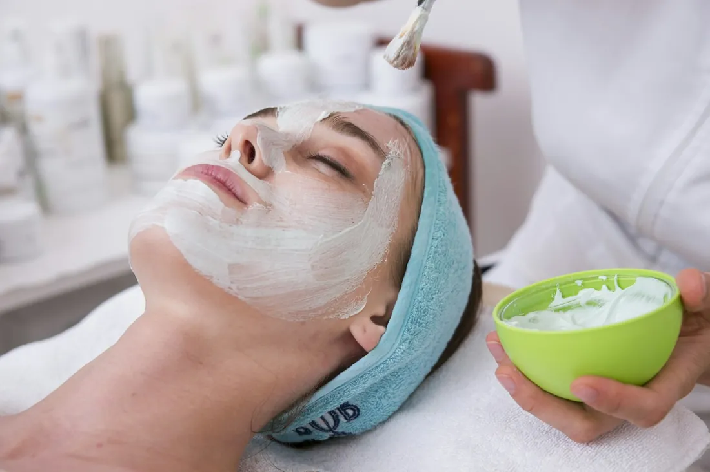

Huidverbetering
Gezichtsbehandelingen met Kalahari, aangepast aan jouw huidtype. Van een eerste kennismaking tot een volledige kuur.
- Vitamine C Treatmentpopulair
- Honeybush Treatmentkennismaking
- Phyto Enzyme Compounddiepe reiniging
- Clear skin treatmentjonge huid